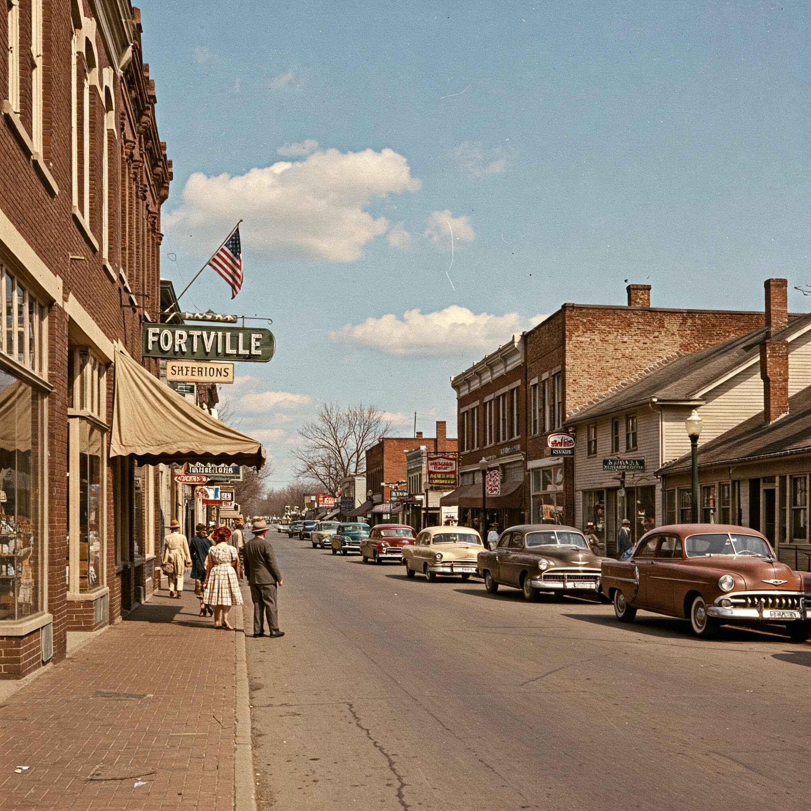

About Fortville
About Fortville: Nestled in the heart of Indiana, Fortville is a charming town known for its rich history, friendly community, and beautiful historic downtown. With a blend of small-town living and convenient access to larger cities, Fortville offers residents and visitors a welcoming atmosphere.
Our History
Fortville was founded in 1865 and has a rich history tied to Cephas Fort who made the original plat survey of Fortville on his property in 1849. He anticipated the arrival of the railroad, which came in 1852 and was named the Bee Line. The railroad station was named Fortville in honor of Cephas Fort, causing the town center to shift somewhat south and east.
Early Fortville thrived on agriculture, with the fertile surrounding lands producing corn and wheat. The Blue River played a vital role in the town's early transportation and industry.
In the late 19th century, Fortville experienced a period of growth due to the establishment of a local college. This led to the construction of many of the historic buildings that still stand in the downtown area.
Town Government
Fortville operates under a Mayor-Council system. The Mayor is the chief executive officer of the town and the Town Council is comprised of five members who are elected by the residents. The town government is responsible for providing essential services such as public safety, water and sewer, parks and recreation, and road maintenance. Current initiatives include revitalizing the downtown area and improving the town's infrastructure.
Demographics
As of the fictional 2020 census, Fortville has a population of approximately 5,000. The town is characterized by a mix of families, young professionals, and retirees. The median age is 38 years old, and the average household income is $70,000. Fortville is proud of its diverse community and its commitment to providing a welcoming environment for all.